Manutenção de áreas verdes
Cuidado periódico de jardins, gramados e áreas externas, conforme as características e as necessidades de cada espaço.
CondomíniosEmpresasComérciosChácarasResidências
Caçapava · SP e região
Manutenção de áreas verdes, paisagismo e poda técnica para condomínios, empresas, comércios, chácaras e sítios — com avaliação individual de cada espaço antes de indicar qualquer serviço.
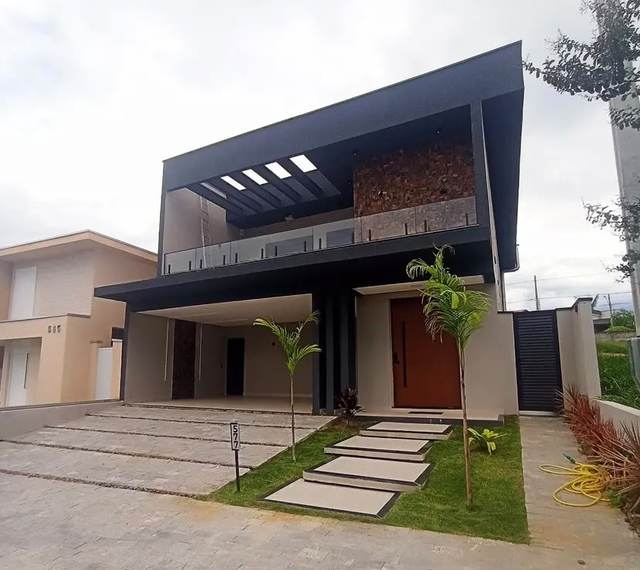
O que fazemos
Da manutenção periódica ao paisagismo completo. Nada é orçado por tabela: o serviço, a frequência e os materiais saem das condições reais do espaço.
Cuidado periódico de jardins, gramados e áreas externas, conforme as características e as necessidades de cada espaço.
Planejamento, criação e renovação de espaços verdes — do desenho do canteiro à execução no local.
Avaliação e execução conforme as condições das plantas, do ambiente e a necessidade de manutenção.
Corte, manutenção, recuperação, plantio e organização de gramados — de jardins residenciais a grandes taludes.
Remoção de excesso de vegetação, limpeza e organização de áreas externas, com o terreno entregue pronto para uso.
Fornecimento conforme disponibilidade, quantidade necessária e localização. Frete sob consulta.
Segmentos atendidos
Cada atendimento é ajustado à realidade do local: o porte da área, o acesso, o uso que ela recebe e a frequência que consegue sustentar.
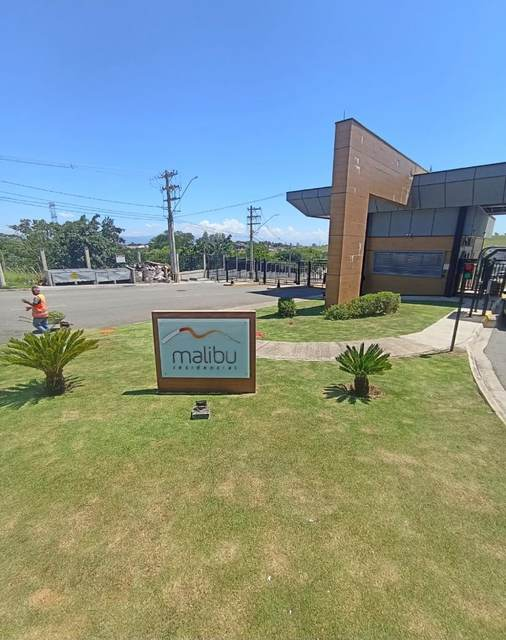
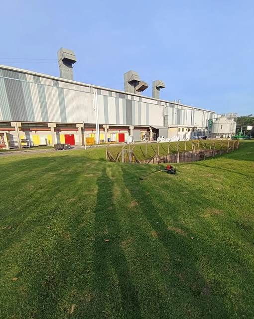
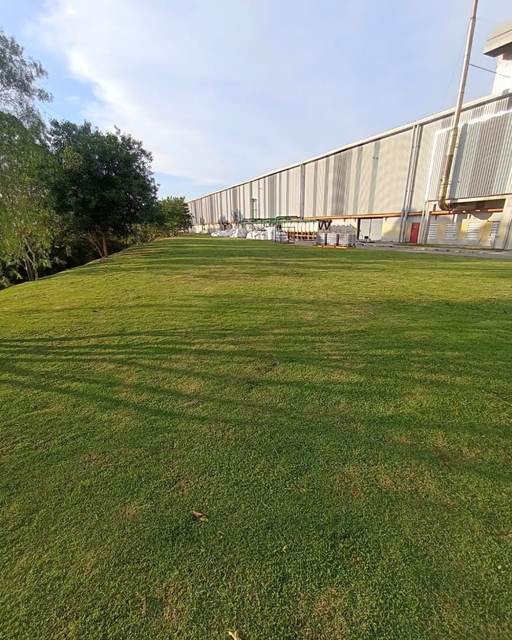
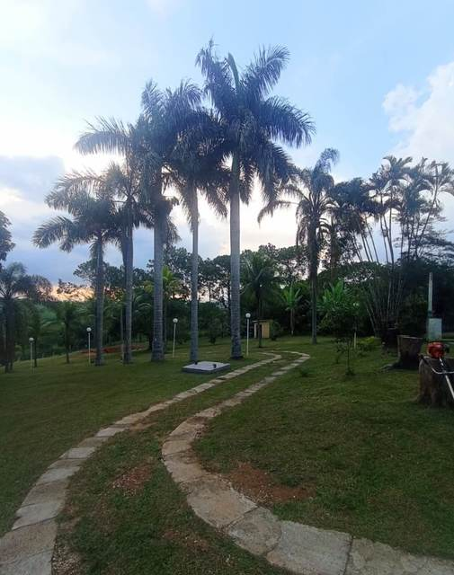
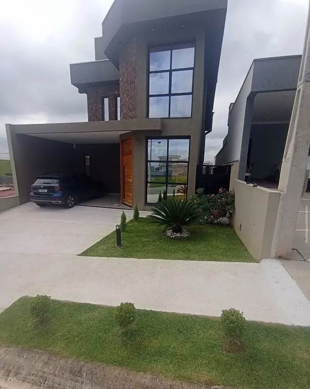
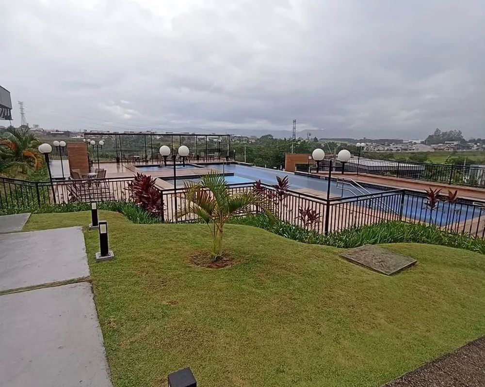
Área comum
Talude, canteiro, calçada e piscina fazem parte do mesmo conjunto. Manter o verde em ordem é manter a leitura do lugar inteiro.
Trabalhos
Manutenção, paisagismo e cuidado de áreas verdes em condomínios, empresas, chácaras e residências da região.
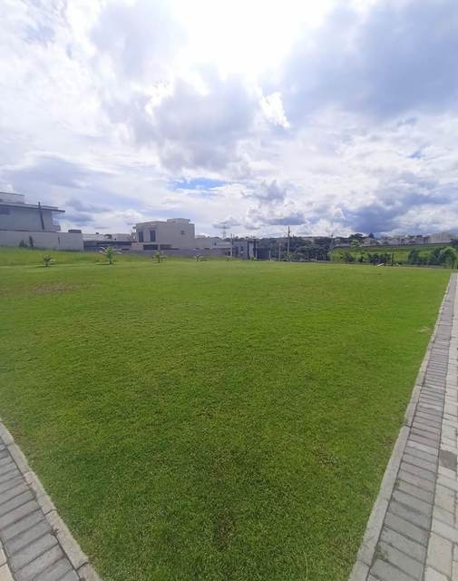
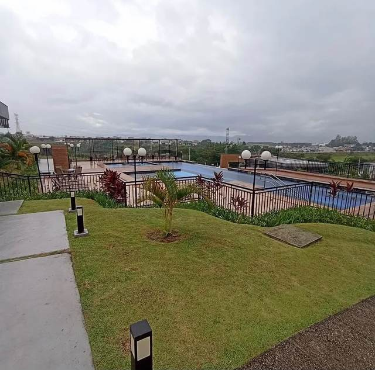
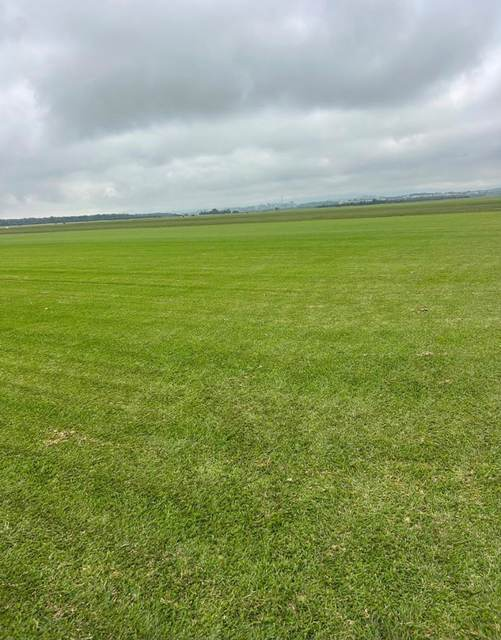
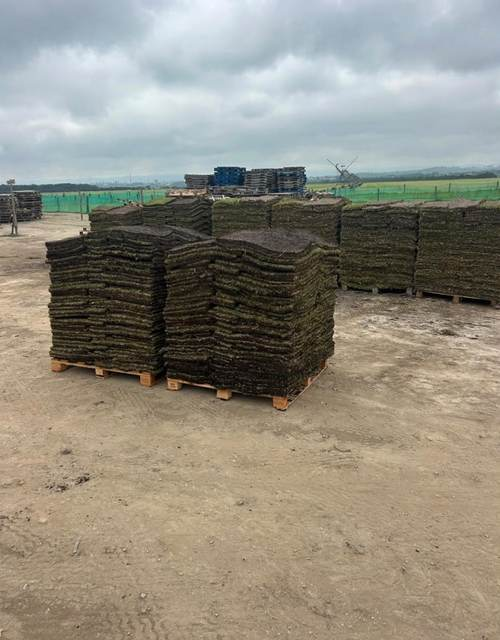
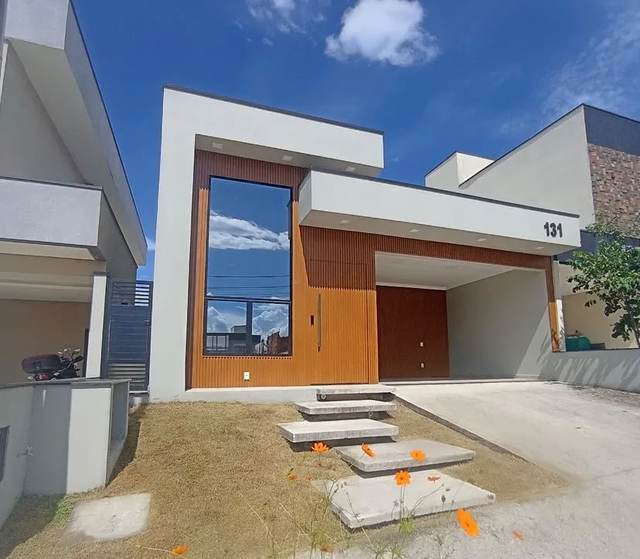
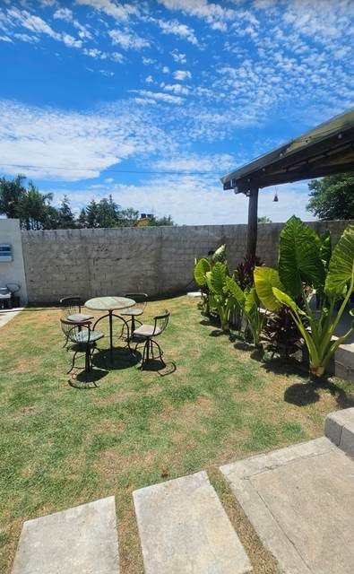
Registros das próprias equipes, feitos em campo.
Ritmo do ano
No Vale do Paraíba o verde acelera com a chuva e o calor e desacelera na seca. Planejar o contrato pelo ano — e não pelo mês mais movimentado — é o que mantém a área apresentável sem desperdício.
Orientação geral para o clima do Vale do Paraíba, não um cronograma fechado. A frequência real de cada contrato sai da avaliação da área — porte, uso, exposição ao sol e espécies presentes.
Fornecimento
A grama sai do campo em placas paletizadas e tem prazo curto entre a colheita e o plantio. Por isso disponibilidade, quantidade e frete são confirmados juntos — e não separadamente.
Como funciona
Quatro etapas, nesta ordem, para que você saiba exatamente o que esperar.
Você envia uma mensagem e explica o tipo de área e o serviço necessário.
Quando possível, envia fotografias, vídeos, localização e dimensões aproximadas.
Analisamos a necessidade e, quando necessário, agendamos uma visita ao local.
Apresentamos o serviço, a frequência, os materiais e as condições para execução.
Perguntas frequentes
Se a sua não estiver aqui, mande pelo WhatsApp — a resposta costuma sair no mesmo dia útil.
Sim. A empresa atua com manutenção de áreas verdes empresariais, comerciais e condominiais, conforme a necessidade e o porte do espaço.
A frequência pode ser definida após a avaliação da área, das condições do jardim e da necessidade de manutenção.
Sim. A disponibilidade e as condições do atendimento devem ser confirmadas após o envio da localização e das informações sobre a área.
Fotografias, vídeos e informações ajudam em uma avaliação inicial. Dependendo do serviço e do tamanho da área, pode ser necessária uma visita.
O fornecimento depende da quantidade e da disponibilidade. O frete deve ser consultado de acordo com a localização.
A empresa está localizada em Caçapava, São Paulo. A disponibilidade para cidades da região deve ser confirmada pelo WhatsApp.
Fale com a RNN Ambiental
Envie uma mensagem, apresente o espaço e solicite uma avaliação para manutenção, paisagismo ou poda técnica.